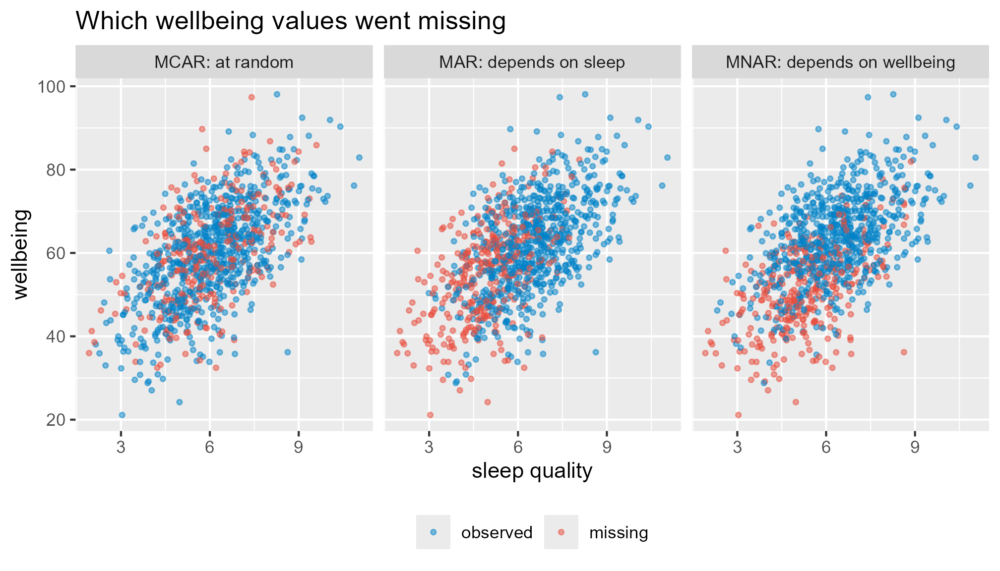
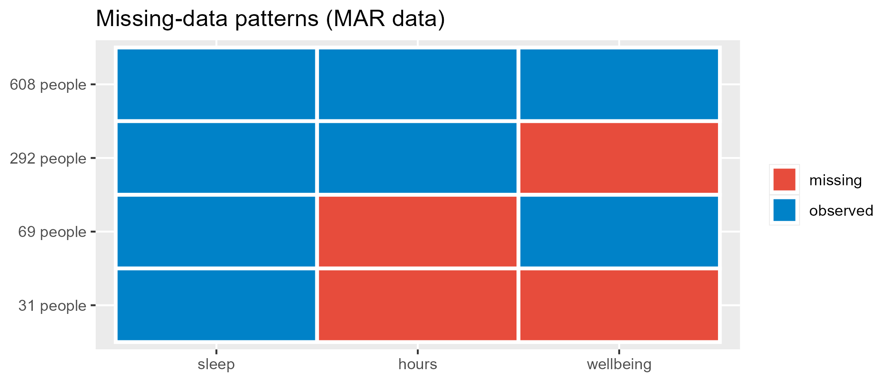
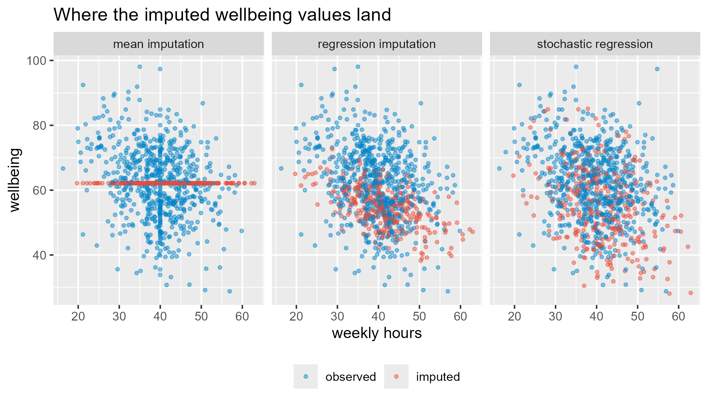
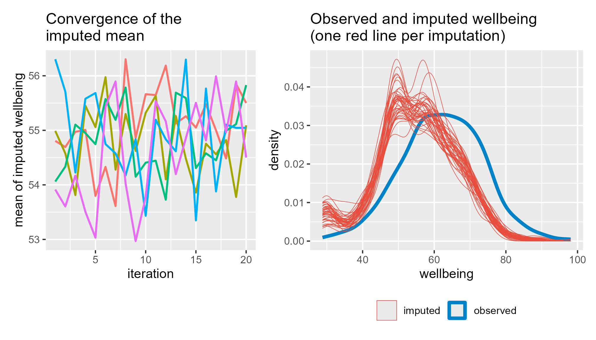
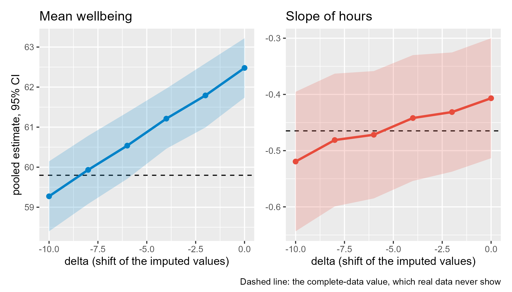
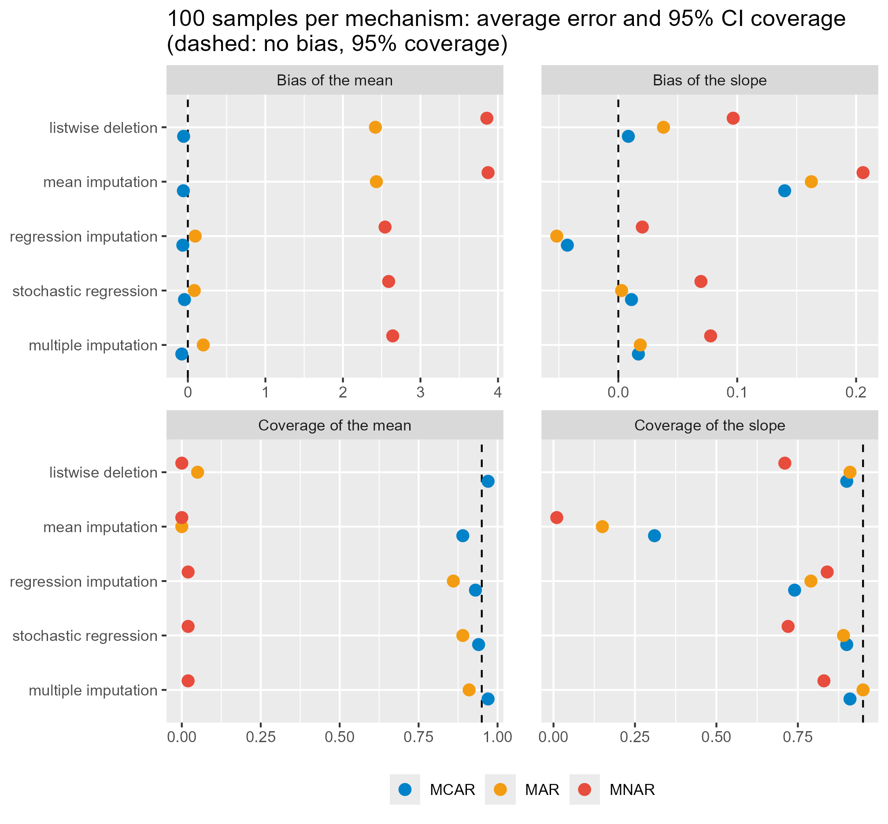

Code
library(mice) # multiple imputation by chained equations
library(MASS) # mvrnorm(): correlated normal data
library(ggplot2)
library(patchwork) # put plots side by sideA company surveys 1,000 employees about their weekly working hours, their sleep quality and their wellbeing. We want two numbers: the average wellbeing, and how much wellbeing goes down with every extra hour of work. But 30% of the employees skipped the wellbeing page, and 10% did not give their hours.
What happens next depends on why the answers are missing. Rubin (1976) named three cases:
| Mechanism | In words | In the survey |
|---|---|---|
| MCAR: missing completely at random | Whether a value is missing has nothing to do with any variable | A batch of questionnaires was lost in the post |
| MAR: missing at random | Whether a value is missing depends on other, observed variables | People who sleep badly skip the wellbeing page more often, and we know their sleep |
| MNAR: missing not at random | Whether a value is missing depends on the missing value itself | People with low wellbeing skip the wellbeing page, because of their low wellbeing |
The names are confusing: “missing at random” does not mean random. It means random once we take the observed variables into account: among people with the same sleep quality, who skipped the page is random.
Most software, R included, handles missing values by quietly dropping every incomplete row (listwise deletion). This page shows when that is harmless, when it is not, why the popular quick fixes are worse, and how multiple imputation does better. Because we simulate the data, we know the true answers and can check every method against them.
Hours, sleep quality and wellbeing are drawn from a multivariate normal distribution with these means, standard deviations and correlations:
| Variable | Mean | SD | Correlation with hours | with sleep |
|---|---|---|---|---|
hours (per week) |
40 | 8 | ||
sleep (quality, 0 to 10) |
6 | 1.5 | −0.20 | |
wellbeing (0 to 100) |
60 | 12 | −0.30 | 0.60 |
means <- c(hours = 40, sleep = 6, wellbeing = 60)
sds <- c(hours = 8, sleep = 1.5, wellbeing = 12)
corr <- matrix(c( 1.00, -0.20, -0.30,
-0.20, 1.00, 0.60,
-0.30, 0.60, 1.00), 3, dimnames = list(names(means), names(means)))
Sigma <- diag(sds) %*% corr %*% diag(sds) # the covariance matrix
dimnames(Sigma) <- dimnames(corr)
true_mean <- 60
true_slope <- unname(corr["hours", "wellbeing"] * sds["wellbeing"] / sds["hours"]) # r * SD_y / SD_x
true_slope[1] -0.45mean_wellbeing slope
59.7983421 -0.4648238 In the population, wellbeing drops by 0.45 points per extra hour of work (\(b = r \times SD_y / SD_x = -0.30 \times 12 / 8\)). Our sample of 1,000 gives 59.80 and -0.465: these are the answers we would get without missing data, the benchmark for every method below.
Sleep is not part of our question. It plays the role of an auxiliary variable: measured in the same survey, related to wellbeing, and (section 5) very useful.
The function below removes about 30% of the wellbeing values, in one of the three ways, and 10% of the hours completely at random:
generate_missing() of the rwf package.add_missing <- function(complete, mechanism, share = 0.30) {
d <- complete
n <- nrow(d)
z <- function(x) (x - mean(x)) / sd(x)
p_missing <- function(lp) { # choose the intercept a that gives the wanted share
a <- uniroot(function(a) mean(plogis(a + lp)) - share, c(-10, 10))$root
plogis(a + lp)
}
if (mechanism == "MCAR") d$wellbeing <- generate_missing(d$wellbeing, missing = round(share * n))
if (mechanism == "MAR") d$wellbeing[runif(n) < p_missing(-1.5 * z(d$sleep))] <- NA
if (mechanism == "MNAR") d$wellbeing[runif(n) < p_missing(-1.5 * z(d$wellbeing))] <- NA
d$hours <- generate_missing(d$hours, missing = round(0.10 * n)) # 10% of hours: completely at random
d
}
set.seed(1)
data_mcar <- add_missing(full, "MCAR")
data_mar <- add_missing(full, "MAR")
data_mnar <- add_missing(full, "MNAR")In real data we never see the missing values. Here we do, so we can look at who went missing:
mech <- rbind(data.frame(full, missing = is.na(data_mcar$wellbeing), mechanism = "MCAR: at random"),
data.frame(full, missing = is.na(data_mar$wellbeing), mechanism = "MAR: depends on sleep"),
data.frame(full, missing = is.na(data_mnar$wellbeing), mechanism = "MNAR: depends on wellbeing"))
mech$mechanism <- factor(mech$mechanism, levels = unique(mech$mechanism))
ggplot(mech, aes(sleep, wellbeing, colour = missing)) +
geom_point(alpha = 0.5, size = 0.9) +
facet_wrap(~mechanism) +
scale_colour_manual(values = c(`FALSE` = "#0082c8", `TRUE` = "#E74C3C"), labels = c("observed", "missing")) +
labs(title = "Which wellbeing values went missing", x = "sleep quality", y = "wellbeing", colour = NULL) +
theme(legend.position = "bottom")
What happens if we simply analyse the observed values?
complete MCAR MAR MNAR
share_missing 0.000 0.300 0.323 0.318
mean_wellbeing 59.798 59.757 62.145 63.878
slope -0.465 -0.505 -0.409 -0.373Under MCAR the observed values are a random subset, so the estimates are fine, only less precise. Under MAR and MNAR the people who stayed are happier than the people who left, so the average wellbeing is too high, and the slope is too flat.
md.pattern() counts the combinations of observed and missing values:
sleep hours wellbeing
608 1 1 1 0
292 1 1 0 1
69 1 0 1 1
31 1 0 0 2
0 100 323 423How to read it: each row is a pattern, with 1 for observed and 0 for missing. The row name is the number of people with that pattern, and the last column the number of missing values in it. The last row gives the number of missing values per variable. Here 608 people answered everything, and 392 (39%) have at least one hole, so listwise deletion would drop more than a third of the sample. The same pattern as a picture:
pat <- md.pattern(data_mar, plot = FALSE)
counts <- as.numeric(rownames(pat)[-nrow(pat)])
tiles <- expand.grid(pattern = seq_along(counts), variable = colnames(pat)[-ncol(pat)])
tiles$observed <- as.vector(pat[-nrow(pat), -ncol(pat)]) == 1
tiles$label <- factor(paste0(counts, " people")[tiles$pattern], levels = rev(paste0(counts, " people")))
ggplot(tiles, aes(variable, label, fill = observed)) +
geom_tile(colour = "white", linewidth = 1) +
scale_fill_manual(values = c(`TRUE` = "#0082c8", `FALSE` = "#E74C3C"), labels = c("missing", "observed")) +
labs(title = "Missing-data patterns (MAR data)", x = NULL, y = NULL, fill = NULL)
We can check whether missingness is related to observed variables: a logistic regression of “wellbeing is missing” on sleep.
Estimate Std. Error z value Pr(>|z|)
MCAR -0.0287 0.0464 -0.6186 0.5362
MAR -1.0246 0.0742 -13.8029 0.0000
MNAR -0.5264 0.0546 -9.6483 0.0000Under MCAR sleep does not predict missingness. Under MAR it does strongly, so the data are not MCAR. But look at the MNAR row: sleep predicts missingness there too, because sleep is correlated with the wellbeing that drives it. No test can tell MAR from MNAR, because the difference lies in the values we do not have. That choice rests on knowledge of how the data were collected, and on the sensitivity analysis of section 6.
From here on we use the MAR data, the realistic case. Four common approaches:
mice() can do all three imputations once (m = 1), with method = "mean", "norm.predict" and "norm.nob":
single <- function(method) complete(mice(data_mar, m = 1, method = method, maxit = if (method == "mean") 1 else 5,
printFlag = FALSE, seed = 1))
filled <- list("complete data (benchmark)" = full,
"listwise deletion" = na.omit(data_mar),
"mean imputation" = single("mean"),
"regression imputation" = single("norm.predict"),
"stochastic regression" = single("norm.nob"))
describe_fit <- function(d) {
f <- lm(wellbeing ~ hours, data = d)
c(n = nobs(f), mean = mean(d$wellbeing), sd = sd(d$wellbeing), r = cor(d$hours, d$wellbeing),
slope = unname(coef(f)["hours"]), se = summary(f)$coefficients["hours", "Std. Error"])
}
quick <- t(sapply(filled, describe_fit))
round(quick, 3) n mean sd r slope se
complete data (benchmark) 1000 59.798 11.910 -0.301 -0.465 0.047
listwise deletion 608 62.414 11.175 -0.277 -0.409 0.058
mean imputation 1000 62.145 9.298 -0.211 -0.267 0.039
regression imputation 1000 59.705 10.546 -0.363 -0.518 0.042
stochastic regression 1000 59.867 11.839 -0.316 -0.483 0.046shown <- c("mean imputation", "regression imputation", "stochastic regression")
pts <- do.call(rbind, lapply(shown, function(nm)
data.frame(filled[[nm]][, c("hours", "wellbeing")], imputed = is.na(data_mar$wellbeing), method = nm)))
pts$method <- factor(pts$method, levels = shown)
ggplot(pts, aes(hours, wellbeing, colour = imputed)) +
geom_point(alpha = 0.45, size = 0.9) +
facet_wrap(~method) +
scale_colour_manual(values = c(`FALSE` = "#0082c8", `TRUE` = "#E74C3C"), labels = c("observed", "imputed")) +
labs(title = "Where the imputed wellbeing values land", x = "weekly hours", y = "wellbeing", colour = NULL) +
theme(legend.position = "bottom")
Row by row:
Multiple imputation (Rubin, 1987) does stochastic imputation not once but \(m\) times, creating \(m\) complete datasets that differ only in the imputed values. Each dataset is analysed as usual, and the \(m\) results are combined. The differences between the \(m\) results show how uncertain the imputations are, and that uncertainty goes into the standard errors.
mice (multivariate imputation by chained equations; van Buuren & Groothuis-Oudshoorn, 2011) imputes one variable at a time from all the others, cycling through the variables a few times. Its default for numeric variables is predictive mean matching (pmm): for each missing value it predicts a value from the other variables, finds the five observed cases whose predictions are closest, and borrows the real value of one of them at random. The imputed values are therefore always values that really occur in the data.
Class: mids
Number of multiple imputations: 40
Imputation methods:
hours sleep wellbeing
"pmm" "" "pmm"
PredictorMatrix:
hours sleep wellbeing
hours 0 1 1
sleep 1 0 1
wellbeing 1 1 0How to read it:
Number of multiple imputations: \(m\) = 40 completed datasets (why 40: see below).Imputation methods: pmm for the two incomplete variables; "" for sleep, which has nothing to impute.PredictorMatrix: which variables (columns) predict which (rows). By default every variable predicts every other. Include the variables of the analysis (the outcome too), and auxiliary variables such as sleep.Analyse each completed dataset with with(), and combine with pool():
term estimate std.error statistic df p.value 2.5 % 97.5 % conf.low conf.high
1 (Intercept) 78.0165217 2.41001487 32.371801 175.4128 6.810418e-76 73.2601643 82.7728791 73.2601643 82.7728791
2 hours -0.4548743 0.06113269 -7.440771 150.5196 7.120770e-12 -0.5756633 -0.3340853 -0.5756633 -0.3340853 term estimate std.error statistic df p.value 2.5 % 97.5 % conf.low conf.high
1 (Intercept) 59.81394 0.4377225 136.6481 295.041 8.576632e-269 58.95248 60.67539 58.95248 60.67539The columns are read like a regression table: estimate, std.error, statistic (t), df, p.value and the 95% confidence interval. The pooled mean of wellbeing is 59.81, against 59.80 in the complete data and 62.41 after listwise deletion.
With \(m\) estimates \(\hat Q_1, \dots, \hat Q_m\) and their squared standard errors \(U_1, \dots, U_m\):
Three summaries of how much the missing data cost:
est <- sapply(fits$analyses, function(f) coef(f)[["hours"]])
u <- sapply(fits$analyses, function(f) vcov(f)["hours", "hours"])
m <- length(est)
q_bar <- mean(est)
u_bar <- mean(u)
b <- var(est)
t_var <- u_bar + (1 + 1 / m) * b
riv <- (1 + 1 / m) * b / u_bar
lambda <- (1 + 1 / m) * b / t_var
df_com <- nrow(data_mar) - 2 # the df if the data were complete
df_old <- (m - 1) / lambda^2
df_obs <- (df_com + 1) / (df_com + 3) * df_com * (1 - lambda)
df <- df_old * df_obs / (df_old + df_obs) # Barnard-Rubin degrees of freedom
fmi <- (riv + 2 / (df + 3)) / (riv + 1)
by_hand <- c(estimate = q_bar, ubar = u_bar, b = b, t = t_var, df = df, riv = riv, lambda = lambda, fmi = fmi)
from_pool <- unlist(pooled$pooled[pooled$pooled$term == "hours", names(by_hand)])
signif(rbind(by_hand, from_pool), 4) estimate ubar b t df riv lambda fmi
by_hand -0.4549 0.002109 0.001588 0.003737 150.5 0.7717 0.4356 0.4429
from_pool -0.4549 0.002109 0.001588 0.003737 150.5 0.7717 0.4356 0.4429The two rows agree. For the slope, \(\lambda\) = 0.44: about 44% of its variance comes from not knowing the missing values, and the FMI says about 44% of the information about it was lost.
The FMI is not simply the share of missing values. The better the other variables predict the missing values, the smaller it is: with a perfect predictor nothing would be lost. Sleep predicts wellbeing only moderately (r = 0.60), and here the FMI ends up a little above the share of people with an incomplete row (39%).
Convergence. mice iterates; the mean of the imputed values should settle down and the separate runs (chains) should mix, with no trend:
imp_trace <- mice(data_mar, m = 5, maxit = 20, seed = 1, printFlag = FALSE)
chains <- imp_trace$chainMean["wellbeing", , ] # iterations x chains
trace_df <- data.frame(iteration = rep(seq_len(nrow(chains)), ncol(chains)), chain = factor(rep(seq_len(ncol(chains)), each = nrow(chains))),
mean = as.vector(chains))
c1 <- ggplot(trace_df, aes(iteration, mean, colour = chain)) +
geom_line(linewidth = 0.8) +
labs(title = "Convergence of the\nimputed mean", x = "iteration", y = "mean of imputed wellbeing") +
theme(legend.position = "none")
imputed <- imp$imp$wellbeing # one column per imputation
dens <- rbind(data.frame(value = data_mar$wellbeing[!is.na(data_mar$wellbeing)], set = "observed", draw = "0"),
data.frame(value = unlist(imputed), set = "imputed", draw = rep(names(imputed), each = nrow(imputed))))
c2 <- ggplot(dens, aes(value, group = draw, colour = set, linewidth = set)) +
geom_density() +
scale_colour_manual(values = c(observed = "#0082c8", imputed = "#E74C3C")) +
scale_linewidth_manual(values = c(observed = 1.4, imputed = 0.2)) +
labs(title = "Observed and imputed wellbeing\n(one red line per imputation)", x = "wellbeing", y = "density",
colour = NULL, linewidth = NULL) +
theme(legend.position = "bottom")
c1 + c2 + plot_layout(widths = c(1, 1.3))
The old advice was 5. With 5, the results change noticeably every time you run the imputation with another seed. A useful rule is to use at least as many imputations as the percentage of incomplete cases (White et al., 2011): here 39%, so about 40. The spread of the pooled slope and its standard error over 10 runs with different seeds:
spread <- do.call(rbind, lapply(c(5, 20, 40), function(mm) do.call(rbind, lapply(1:10, function(s) {
p <- summary(pool(with(mice(data_mar, m = mm, seed = s, printFlag = FALSE), lm(wellbeing ~ hours))))
data.frame(m = mm, estimate = p$estimate[2], se = p$std.error[2])
}))))
round(do.call(rbind, lapply(split(spread, spread$m), function(s)
c(m = s$m[1], estimate_mean = mean(s$estimate), estimate_sd = sd(s$estimate),
se_mean = mean(s$se), se_sd = sd(s$se)))), 4) m estimate_mean estimate_sd se_mean se_sd
5 5 -0.4681 0.0146 0.0599 0.0097
20 20 -0.4635 0.0080 0.0576 0.0034
40 40 -0.4619 0.0055 0.0579 0.0021The averages hardly change, but the run-to-run spread (estimate_sd, se_sd) shrinks as \(m\) grows. With 40 imputations a second run would give practically the same numbers.
The data are MAR given sleep. What if we leave sleep out of the imputation model?
imp_no_aux <- mice(data_mar[, c("hours", "wellbeing")], m = 40, method = "pmm", seed = 2026, printFlag = FALSE)
mi_summary <- function(im) c(mean = summary(pool(with(im, lm(wellbeing ~ 1))))$estimate,
slope = summary(pool(with(im, lm(wellbeing ~ hours))))$estimate[2])
aux <- rbind("complete data (benchmark)" = c(mean = mean(full$wellbeing), slope = unname(coef(fit_full)["hours"])),
"listwise deletion" = quick["listwise deletion", c("mean", "slope")],
"MI without sleep" = mi_summary(imp_no_aux),
"MI with sleep" = mi_summary(imp))
round(aux, 3) mean slope
complete data (benchmark) 59.798 -0.465
listwise deletion 62.414 -0.409
MI without sleep 61.949 -0.406
MI with sleep 59.814 -0.455Without sleep, multiple imputation is no better than deletion: from the point of view of a model that does not know sleep, the data are not MAR. With sleep, it recovers the benchmark. So put in the imputation model every variable that predicts the missing values or the missingness, even if it is not part of the analysis (the “inclusive strategy”; Collins et al., 2001).
The same holds for any analysis that compares models: every step of a Hierarchical Regression must use the same people, which multiple imputation gives you without dropping anyone. Fit each step in each imputed dataset and pool them; for example pool.r.squared(fits) pools \(R^2\):
Multiple imputation assumes MAR. With the MNAR data:
imp_mnar <- mice(data_mnar, m = 40, method = "pmm", seed = 2026, printFlag = FALSE)
mnar_tab <- rbind("complete data (benchmark)" = c(mean = mean(full$wellbeing), slope = unname(coef(fit_full)["hours"])),
"listwise deletion" = c(mean = mean(na.omit(data_mnar)$wellbeing),
slope = unname(coef(lm(wellbeing ~ hours, data = data_mnar))["hours"])),
"multiple imputation" = mi_summary(imp_mnar))
round(mnar_tab, 3) mean slope
complete data (benchmark) 59.798 -0.465
listwise deletion 64.054 -0.373
multiple imputation 62.552 -0.406Imputation helps a little, because sleep carries some information about the missing wellbeing values, but the mean is still too high. The data cannot tell us how much lower the missing values are.
What we can do is a sensitivity analysis: ask how the results change if the missing people are worse off than MAR predicts. The delta adjustment (van Buuren, 2018) subtracts a fixed amount \(\delta\) from every imputed wellbeing value, through the post argument of mice():
deltas <- c(0, -2, -4, -6, -8, -10)
sens <- do.call(rbind, lapply(deltas, function(delta) {
post <- make.post(data_mnar)
post["wellbeing"] <- paste("imp[[j]][, i] <- imp[[j]][, i] +", delta) # shift every imputed value by delta
im <- mice(data_mnar, m = 20, method = "pmm", post = post, seed = 2026, printFlag = FALSE)
pm <- summary(pool(with(im, lm(wellbeing ~ 1))), conf.int = TRUE)
ps <- summary(pool(with(im, lm(wellbeing ~ hours))), conf.int = TRUE)
data.frame(delta, mean = pm$estimate, mean_low = pm$`2.5 %`, mean_high = pm$`97.5 %`,
slope = ps$estimate[2], slope_low = ps$`2.5 %`[2], slope_high = ps$`97.5 %`[2])
}))
round(sens, 3) delta mean mean_low mean_high slope slope_low slope_high
1 0 62.479 61.738 63.220 -0.407 -0.514 -0.300
2 -2 61.792 60.991 62.592 -0.431 -0.537 -0.325
3 -4 61.212 60.460 61.964 -0.442 -0.554 -0.330
4 -6 60.538 59.709 61.367 -0.472 -0.585 -0.358
5 -8 59.933 59.082 60.783 -0.481 -0.599 -0.363
6 -10 59.273 58.399 60.146 -0.519 -0.643 -0.395s1 <- ggplot(sens, aes(delta, mean)) +
geom_hline(yintercept = mean(full$wellbeing), linetype = "dashed") +
geom_ribbon(aes(ymin = mean_low, ymax = mean_high), fill = "#0082c8", alpha = 0.2) +
geom_line(colour = "#0082c8", linewidth = 1.1) + geom_point(colour = "#0082c8", size = 2) +
labs(title = "Mean wellbeing", x = "delta (shift of the imputed values)", y = "pooled estimate, 95% CI")
s2 <- ggplot(sens, aes(delta, slope)) +
geom_hline(yintercept = unname(coef(fit_full)["hours"]), linetype = "dashed") +
geom_ribbon(aes(ymin = slope_low, ymax = slope_high), fill = "#E74C3C", alpha = 0.2) +
geom_line(colour = "#E74C3C", linewidth = 1.1) + geom_point(colour = "#E74C3C", size = 2) +
labs(title = "Slope of hours", x = "delta (shift of the imputed values)", y = NULL)
s1 + s2 + plot_annotation(caption = "Dashed line: the complete-data value, which real data never show")
As \(\delta\) grows, the estimated mean falls, and somewhere around \(\delta\) = -8 it reaches the complete-data value (which in real life we would not know). The slope moves less and stays clearly negative for every \(\delta\) tried.
In practice, report the analysis under MAR and then the range of results for plausible values of \(\delta\), chosen with subject knowledge (for example, “people who skip a wellbeing page score up to 5 points lower than similar people who answer it”). If the conclusion survives the whole range, it is robust; if it flips at some \(\delta\), say where.
One dataset can be lucky. We repeat everything 100 times for each mechanism (500 people per sample) and record, for every method, the average error of the estimates (bias) and how often its 95% confidence interval contains the true value (coverage, which should be 95%). The truth is the population value: a mean of 60 and a slope of -0.45. To keep the page fast, multiple imputation uses 5 imputations here.
ci_lm <- function(f, term) {
e <- coef(f)[[term]]; se <- summary(f)$coefficients[term, "Std. Error"]; q <- qt(0.975, df.residual(f))
c(estimate = e, low = e - q * se, high = e + q * se)
}
both <- function(d) rbind(mean = ci_lm(lm(wellbeing ~ 1, data = d), "(Intercept)"),
slope = ci_lm(lm(wellbeing ~ hours, data = d), "hours"))
one_run <- function(mechanism, n = 500) {
d <- add_missing(make_people(n), mechanism)
out <- list("listwise deletion" = both(na.omit(d)),
"mean imputation" = both(complete(mice(d, m = 1, maxit = 1, method = "mean", printFlag = FALSE))),
"regression imputation" = both(complete(mice(d, m = 1, method = "norm.predict", printFlag = FALSE))),
"stochastic regression" = both(complete(mice(d, m = 1, method = "norm.nob", printFlag = FALSE))))
im <- mice(d, m = 5, method = "pmm", printFlag = FALSE)
pm <- summary(pool(with(im, lm(wellbeing ~ 1))), conf.int = TRUE)
ps <- summary(pool(with(im, lm(wellbeing ~ hours))), conf.int = TRUE)
out[["multiple imputation"]] <- rbind(mean = c(pm$estimate, pm$`2.5 %`, pm$`97.5 %`),
slope = c(ps$estimate[2], ps$`2.5 %`[2], ps$`97.5 %`[2]))
do.call(rbind, lapply(names(out), function(nm) data.frame(mechanism, method = nm, estimand = c("mean", "slope"),
estimate = out[[nm]][, 1], low = out[[nm]][, 2], high = out[[nm]][, 3])))
}
set.seed(11)
sim <- do.call(rbind, lapply(c("MCAR", "MAR", "MNAR"), function(mech) do.call(rbind, replicate(100, one_run(mech), simplify = FALSE))))
sim$truth <- ifelse(sim$estimand == "mean", true_mean, true_slope)
sim$covered <- sim$low <= sim$truth & sim$truth <= sim$high
res <- aggregate(cbind(bias = estimate - truth, coverage = covered) ~ mechanism + method + estimand, data = sim, FUN = mean)
res$mechanism <- factor(res$mechanism, levels = c("MCAR", "MAR", "MNAR"))
res$method <- factor(res$method, levels = rev(c("listwise deletion", "mean imputation", "regression imputation",
"stochastic regression", "multiple imputation")))
res <- res[order(res$estimand, res$mechanism, -as.integer(res$method)), ]
rownames(res) <- NULL
res mechanism method estimand bias coverage
1 MCAR listwise deletion mean -0.054576189 0.97
2 MCAR mean imputation mean -0.057844419 0.89
3 MCAR regression imputation mean -0.065095101 0.93
4 MCAR stochastic regression mean -0.043553396 0.94
5 MCAR multiple imputation mean -0.077940847 0.97
6 MAR listwise deletion mean 2.418678326 0.05
7 MAR mean imputation mean 2.431643718 0.00
8 MAR regression imputation mean 0.094776909 0.86
9 MAR stochastic regression mean 0.083008729 0.89
10 MAR multiple imputation mean 0.199120468 0.91
11 MNAR listwise deletion mean 3.856093773 0.00
12 MNAR mean imputation mean 3.871936862 0.00
13 MNAR regression imputation mean 2.543219582 0.02
14 MNAR stochastic regression mean 2.589725594 0.02
15 MNAR multiple imputation mean 2.642145991 0.02
16 MCAR listwise deletion slope 0.008439050 0.90
17 MCAR mean imputation slope 0.139907660 0.31
18 MCAR regression imputation slope -0.042856920 0.74
19 MCAR stochastic regression slope 0.011064852 0.90
20 MCAR multiple imputation slope 0.016877277 0.91
21 MAR listwise deletion slope 0.037965483 0.91
22 MAR mean imputation slope 0.162355938 0.15
23 MAR regression imputation slope -0.051779066 0.79
24 MAR stochastic regression slope 0.002762656 0.89
25 MAR multiple imputation slope 0.018467936 0.95
26 MNAR listwise deletion slope 0.096606573 0.71
27 MNAR mean imputation slope 0.205821008 0.01
28 MNAR regression imputation slope 0.020169636 0.84
29 MNAR stochastic regression slope 0.069487237 0.72
30 MNAR multiple imputation slope 0.077632275 0.83long <- rbind(data.frame(res[, c("mechanism", "method")], panel = paste("Bias of the", res$estimand), value = res$bias),
data.frame(res[, c("mechanism", "method")], panel = paste("Coverage of the", res$estimand), value = res$coverage))
long$panel <- factor(long$panel, levels = c("Bias of the mean", "Bias of the slope", "Coverage of the mean", "Coverage of the slope"))
refs <- data.frame(panel = factor(levels(long$panel), levels = levels(long$panel)), x = c(0, 0, 0.95, 0.95))
ggplot(long, aes(value, method, colour = mechanism)) +
geom_vline(data = refs, aes(xintercept = x), linetype = "dashed") +
geom_point(size = 2.8, position = position_dodge(width = 0.5)) +
facet_wrap(~panel, scales = "free_x", ncol = 2) +
scale_colour_manual(values = c(MCAR = "#0082c8", MAR = "#f39c12", MNAR = "#E74C3C")) +
labs(title = "100 samples per mechanism: average error and 95% CI coverage\n(dashed: no bias, 95% coverage)",
x = NULL, y = NULL, colour = NULL) +
theme(legend.position = "bottom", panel.spacing.x = unit(1.5, "lines"))
What the simulation shows (the true slope is negative, so a positive bias of the slope means a slope that is too flat):
A report should give the amount and pattern of missing data, the assumed mechanism and why, how the imputation was done, and the pooled results (Enders, 2022; van Buuren, 2018). We collect the numbers from the R objects:
sp <- summary(pooled, conf.int = TRUE)
row <- sp[sp$term == "hours", ]
pf <- pooled$pooled[pooled$pooled$term == "hours", ]
mis_test <- missing_vs_sleep(data_mar)
f2 <- function(x) formatC(x, format = "f", digits = 2)
nz <- function(x, d = 2) sub("^(-?)0", "\\1", formatC(x, format = "f", digits = d)) # no leading zero
pval <- function(p) if (p < .001) "< .001" else paste("=", nz(p, 3))Method (missing data):
Of the 1,000 participants, 32.3% had missing wellbeing scores and 10% missing working hours; 39.2% had at least one missing value. Missing wellbeing was more likely among participants reporting poorer sleep quality, b = -1.02, p < .001, so the data were not missing completely at random. We assumed that they were missing at random given the observed variables, and handled them with multiple imputation by chained equations in R (Version 4.6.2; R Core Team, 2026) with the mice package (Version 3.19.0; van Buuren & Groothuis-Oudshoorn, 2011). Missing values were imputed with predictive mean matching, using wellbeing, working hours and sleep quality (an auxiliary variable) as predictors. We created 40 imputed datasets, analysed each separately, and combined the results with Rubin’s rules.
Results:
Across the imputed datasets, mean wellbeing was 59.81, 95% CI [58.95, 60.68]. Each additional weekly working hour was associated with lower wellbeing, b = -0.45, SE = 0.06, t(150.5) = -7.44, p < .001, 95% CI [-0.58, -0.33]. The fraction of missing information for this coefficient was .44.
Table 1
Regression of Wellbeing on Weekly Working Hours, Pooled Over 40 Imputed Datasets
| Predictor | b | SE | t | df | p | 95% CI | FMI |
|---|---|---|---|---|---|---|---|
| Intercept | 78.02 | 2.41 | 32.37 | 175.4 | < .001 | [73.26, 82.77] | .40 |
| Weekly working hours | -0.45 | 0.06 | -7.44 | 150.5 | < .001 | [-0.58, -0.33] | .44 |
Note. N = 1,000. df are Barnard–Rubin degrees of freedom. FMI = fraction of missing information.
Points to remember:
citation() and citation("mice") in R give the exact references.| MCAR | Missingness unrelated to anything: deletion is unbiased, only less precise |
| MAR | Missingness depends on observed variables: deletion is biased; multiple imputation that uses those variables is not |
| MNAR | Missingness depends on the missing values: no method fixes it from the data alone; use a sensitivity analysis |
| Telling them apart | Observed variables that predict missingness rule out MCAR; nothing in the data can rule out MNAR |
| Mean imputation | Never: shrinks variances, distorts correlations, too-small standard errors |
| Regression imputation | Imputed values on a line: correlations too strong, standard errors too small |
| One stochastic imputation | Estimates fine, standard errors too small |
| Multiple imputation | imp <- mice(d, m = 40); pool(with(imp, lm(...))): valid estimates and standard errors under MAR |
| Rubin’s rules | \(T = \bar U + (1 + 1/m)B\); FMI = the share of information lost |
| How many imputations | At least the percentage of incomplete cases |
| Imputation model | All analysis variables, the outcome included, plus auxiliary variables |
| Check | Convergence of the chains; imputed values that make sense |
Barnard, J., & Rubin, D. B. (1999). Small-sample degrees of freedom with multiple imputation. Biometrika, 86(4), 948–955.
Collins, L. M., Schafer, J. L., & Kam, C.-M. (2001). A comparison of inclusive and restrictive strategies in modern missing data procedures. Psychological Methods, 6(4), 330–351.
Enders, C. K. (2022). Applied missing data analysis (2nd ed.). Guilford Press.
Graham, J. W., Olchowski, A. E., & Gilreath, T. D. (2007). How many imputations are really needed? Some practical clarifications of multiple imputation theory. Prevention Science, 8(3), 206–213.
Little, R. J. A., & Rubin, D. B. (2019). Statistical analysis with missing data (3rd ed.). Wiley.
Rubin, D. B. (1976). Inference and missing data. Biometrika, 63(3), 581–592.
Rubin, D. B. (1987). Multiple imputation for nonresponse in surveys. Wiley.
Schafer, J. L., & Graham, J. W. (2002). Missing data: Our view of the state of the art. Psychological Methods, 7(2), 147–177.
van Buuren, S. (2018). Flexible imputation of missing data (2nd ed.). CRC Press.
van Buuren, S., & Groothuis-Oudshoorn, K. (2011). mice: Multivariate imputation by chained equations in R. Journal of Statistical Software, 45(3), 1–67.
White, I. R., Royston, P., & Wood, A. M. (2011). Multiple imputation using chained equations: Issues and guidance for practice. Statistics in Medicine, 30(4), 377–399.
generate_missing() on this page---
title: "Missing Data and Multiple Imputation in R With mice"
description: "Missing data in R: MCAR, MAR and MNAR, why deletion and mean imputation mislead, multiple imputation with mice, Rubin's rules and a sensitivity analysis."
author: ""
---
```{r options, echo=FALSE, warning=FALSE, message=FALSE}
directory<-if (rstudioapi::isAvailable()) paste0(dirname(rstudioapi::getActiveDocumentContext()$path),"/") else ""
source(paste0(directory, "R/code_options.R"))
source(paste0(directory, "R/code_rwf.R"))
# wider, shorter figures than the site default; no knitr cache: cached chunks would not
# notice an edit to the simulated data
knitr::opts_chunk$set(fig.height = 4.5, cache = FALSE)
```
## The problem: holes in the data
A company surveys 1,000 employees about their **weekly working hours**, their **sleep quality** and their **wellbeing**. We want two numbers: the average wellbeing, and how much wellbeing goes down with every extra hour of work. But 30% of the employees skipped the wellbeing page, and 10% did not give their hours.
What happens next depends on **why** the answers are missing. Rubin (1976) named three cases:
| Mechanism | In words | In the survey |
|---|---|---|
| **MCAR**: missing completely at random | Whether a value is missing has nothing to do with any variable | A batch of questionnaires was lost in the post |
| **MAR**: missing at random | Whether a value is missing depends on **other, observed** variables | People who sleep badly skip the wellbeing page more often, and we know their sleep |
| **MNAR**: missing not at random | Whether a value is missing depends on the **missing value itself** | People with low wellbeing skip the wellbeing page, because of their low wellbeing |
The names are confusing: "missing at random" does **not** mean random. It means random **once we take the observed variables into account**: among people with the same sleep quality, who skipped the page is random.
Most software, R included, handles missing values by quietly dropping every incomplete row (**listwise deletion**). This page shows when that is harmless, when it is not, why the popular quick fixes are worse, and how **multiple imputation** does better. Because we simulate the data, we know the true answers and can check every method against them.
```{r packages}
library(mice) # multiple imputation by chained equations
library(MASS) # mvrnorm(): correlated normal data
library(ggplot2)
library(patchwork) # put plots side by side
```
---
## 1. Simulate the complete data
Hours, sleep quality and wellbeing are drawn from a multivariate normal distribution with these means, standard deviations and correlations:
| Variable | Mean | SD | Correlation with hours | with sleep |
|---|---|---|---|---|
| `hours` (per week) | 40 | 8 | | |
| `sleep` (quality, 0 to 10) | 6 | 1.5 | −0.20 | |
| `wellbeing` (0 to 100) | 60 | 12 | −0.30 | 0.60 |
```{r simulate}
means <- c(hours = 40, sleep = 6, wellbeing = 60)
sds <- c(hours = 8, sleep = 1.5, wellbeing = 12)
corr <- matrix(c( 1.00, -0.20, -0.30,
-0.20, 1.00, 0.60,
-0.30, 0.60, 1.00), 3, dimnames = list(names(means), names(means)))
Sigma <- diag(sds) %*% corr %*% diag(sds) # the covariance matrix
dimnames(Sigma) <- dimnames(corr)
true_mean <- 60
true_slope <- unname(corr["hours", "wellbeing"] * sds["wellbeing"] / sds["hours"]) # r * SD_y / SD_x
true_slope
make_people <- function(n) as.data.frame(mvrnorm(n, means, Sigma))
set.seed(2026)
full <- make_people(1000)
fit_full <- lm(wellbeing ~ hours, data = full)
c(mean_wellbeing = mean(full$wellbeing), slope = unname(coef(fit_full)["hours"]))
```
In the population, wellbeing drops by `r sprintf("%.2f", abs(true_slope))` points per extra hour of work ($b = r \times SD_y / SD_x = -0.30 \times 12 / 8$). Our sample of 1,000 gives `r sprintf("%.2f", mean(full$wellbeing))` and `r sprintf("%.3f", coef(fit_full)["hours"])`: these are the answers we would get **without** missing data, the benchmark for every method below.
Sleep is not part of our question. It plays the role of an **auxiliary variable**: measured in the same survey, related to wellbeing, and (section 5) very useful.
---
## 2. Three ways to lose data
The function below removes about 30% of the wellbeing values, in one of the three ways, and 10% of the hours completely at random:
- **MCAR**: 300 wellbeing values chosen at random, with `generate_missing()` of the rwf package.
- **MAR**: the chance of missing wellbeing depends on sleep: $P(\text{missing}) = \text{logistic}(a - 1.5\,z_{\text{sleep}})$, where $z$ is the standardised sleep score and $a$ is set to give 30% missing. People who sleep badly skip it more often.
- **MNAR**: the same, but with $z_{\text{wellbeing}}$: the lower the wellbeing, the more likely it is missing.
```{r add_missing}
add_missing <- function(complete, mechanism, share = 0.30) {
d <- complete
n <- nrow(d)
z <- function(x) (x - mean(x)) / sd(x)
p_missing <- function(lp) { # choose the intercept a that gives the wanted share
a <- uniroot(function(a) mean(plogis(a + lp)) - share, c(-10, 10))$root
plogis(a + lp)
}
if (mechanism == "MCAR") d$wellbeing <- generate_missing(d$wellbeing, missing = round(share * n))
if (mechanism == "MAR") d$wellbeing[runif(n) < p_missing(-1.5 * z(d$sleep))] <- NA
if (mechanism == "MNAR") d$wellbeing[runif(n) < p_missing(-1.5 * z(d$wellbeing))] <- NA
d$hours <- generate_missing(d$hours, missing = round(0.10 * n)) # 10% of hours: completely at random
d
}
set.seed(1)
data_mcar <- add_missing(full, "MCAR")
data_mar <- add_missing(full, "MAR")
data_mnar <- add_missing(full, "MNAR")
```
In real data we never see the missing values. Here we do, so we can look at **who** went missing:
```{r mechanisms, fig.height = 4}
mech <- rbind(data.frame(full, missing = is.na(data_mcar$wellbeing), mechanism = "MCAR: at random"),
data.frame(full, missing = is.na(data_mar$wellbeing), mechanism = "MAR: depends on sleep"),
data.frame(full, missing = is.na(data_mnar$wellbeing), mechanism = "MNAR: depends on wellbeing"))
mech$mechanism <- factor(mech$mechanism, levels = unique(mech$mechanism))
ggplot(mech, aes(sleep, wellbeing, colour = missing)) +
geom_point(alpha = 0.5, size = 0.9) +
facet_wrap(~mechanism) +
scale_colour_manual(values = c(`FALSE` = "#0082c8", `TRUE` = "#E74C3C"), labels = c("observed", "missing")) +
labs(title = "Which wellbeing values went missing", x = "sleep quality", y = "wellbeing", colour = NULL) +
theme(legend.position = "bottom")
```
- **MCAR**: the red points are scattered everywhere.
- **MAR**: they gather on the **left**, among people who sleep badly. Since bad sleepers also have lower wellbeing, the missing values are mostly low ones.
- **MNAR**: they gather at the **bottom**: the low wellbeing values themselves are missing.
What happens if we simply analyse the observed values?
```{r observed_only}
round(sapply(list(complete = full, MCAR = data_mcar, MAR = data_mar, MNAR = data_mnar), function(d)
c(share_missing = mean(is.na(d$wellbeing)),
mean_wellbeing = mean(d$wellbeing, na.rm = TRUE),
slope = unname(coef(lm(wellbeing ~ hours, data = d))["hours"]))), 3)
```
Under MCAR the observed values are a random subset, so the estimates are fine, only less precise. Under MAR and MNAR the people who stayed are happier than the people who left, so the average wellbeing is too **high**, and the slope is too flat.
---
## 3. Look at the missing data first
### The missing-data pattern
`md.pattern()` counts the combinations of observed and missing values:
```{r md_pattern}
md.pattern(data_mar, plot = FALSE)
```
How to read it: each **row** is a pattern, with 1 for observed and 0 for missing. The **row name** is the number of people with that pattern, and the **last column** the number of missing values in it. The **last row** gives the number of missing values per variable. Here `r sum(complete.cases(data_mar))` people answered everything, and `r sum(!complete.cases(data_mar))` (`r round(100 * mean(!complete.cases(data_mar)))`%) have at least one hole, so listwise deletion would drop more than a third of the sample. The same pattern as a picture:
```{r pattern_plot, fig.height = 3}
pat <- md.pattern(data_mar, plot = FALSE)
counts <- as.numeric(rownames(pat)[-nrow(pat)])
tiles <- expand.grid(pattern = seq_along(counts), variable = colnames(pat)[-ncol(pat)])
tiles$observed <- as.vector(pat[-nrow(pat), -ncol(pat)]) == 1
tiles$label <- factor(paste0(counts, " people")[tiles$pattern], levels = rev(paste0(counts, " people")))
ggplot(tiles, aes(variable, label, fill = observed)) +
geom_tile(colour = "white", linewidth = 1) +
scale_fill_manual(values = c(`TRUE` = "#0082c8", `FALSE` = "#E74C3C"), labels = c("missing", "observed")) +
labs(title = "Missing-data patterns (MAR data)", x = NULL, y = NULL, fill = NULL)
```
### Is it MCAR?
We can check whether missingness is related to **observed** variables: a logistic regression of "wellbeing is missing" on sleep.
```{r test_mcar}
missing_vs_sleep <- function(d) summary(glm(is.na(wellbeing) ~ sleep, family = binomial, data = d))$coefficients["sleep", ]
round(rbind(MCAR = missing_vs_sleep(data_mcar), MAR = missing_vs_sleep(data_mar), MNAR = missing_vs_sleep(data_mnar)), 4)
```
Under MCAR sleep does not predict missingness. Under MAR it does strongly, so the data are **not** MCAR. But look at the MNAR row: sleep predicts missingness there too, because sleep is correlated with the wellbeing that drives it. **No test can tell MAR from MNAR**, because the difference lies in the values we do not have. That choice rests on knowledge of how the data were collected, and on the sensitivity analysis of section 6.
---
## 4. The quick fixes, and what they do
From here on we use the **MAR** data, the realistic case. Four common approaches:
- **Listwise deletion**: analyse only the complete rows (R's default).
- **Mean imputation**: fill each hole with the mean of the variable.
- **Regression imputation**: fill each hole with the value predicted from the other variables.
- **Stochastic regression imputation**: the same, plus a random error, so the imputed values scatter like real ones.
`mice()` can do all three imputations once (`m = 1`), with `method = "mean"`, `"norm.predict"` and `"norm.nob"`:
```{r quick_fixes}
single <- function(method) complete(mice(data_mar, m = 1, method = method, maxit = if (method == "mean") 1 else 5,
printFlag = FALSE, seed = 1))
filled <- list("complete data (benchmark)" = full,
"listwise deletion" = na.omit(data_mar),
"mean imputation" = single("mean"),
"regression imputation" = single("norm.predict"),
"stochastic regression" = single("norm.nob"))
describe_fit <- function(d) {
f <- lm(wellbeing ~ hours, data = d)
c(n = nobs(f), mean = mean(d$wellbeing), sd = sd(d$wellbeing), r = cor(d$hours, d$wellbeing),
slope = unname(coef(f)["hours"]), se = summary(f)$coefficients["hours", "Std. Error"])
}
quick <- t(sapply(filled, describe_fit))
round(quick, 3)
```
```{r quick_plot, fig.height = 4}
shown <- c("mean imputation", "regression imputation", "stochastic regression")
pts <- do.call(rbind, lapply(shown, function(nm)
data.frame(filled[[nm]][, c("hours", "wellbeing")], imputed = is.na(data_mar$wellbeing), method = nm)))
pts$method <- factor(pts$method, levels = shown)
ggplot(pts, aes(hours, wellbeing, colour = imputed)) +
geom_point(alpha = 0.45, size = 0.9) +
facet_wrap(~method) +
scale_colour_manual(values = c(`FALSE` = "#0082c8", `TRUE` = "#E74C3C"), labels = c("observed", "imputed")) +
labs(title = "Where the imputed wellbeing values land", x = "weekly hours", y = "wellbeing", colour = NULL) +
theme(legend.position = "bottom")
```
Row by row:
- **Listwise deletion** keeps `r quick["listwise deletion", "n"]` of 1,000 people. Its mean (`r sprintf("%.2f", quick["listwise deletion", "mean"])`) is too high, because the bad sleepers, who are less happy, are the ones who left.
- **Mean imputation** is the worst. Every hole gets the same value: the horizontal red line in the plot, and the vertical blue line of people whose hours were filled with the mean. So the mean stays as biased as with deletion, the SD shrinks (`r sprintf("%.2f", quick["mean imputation", "sd"])` against `r sprintf("%.2f", quick["complete data (benchmark)", "sd"])`), and the correlation and slope are pulled towards 0 (`r sprintf("%.3f", quick["mean imputation", "slope"])`). On top of that, R treats the 1,000 rows as real data, so the standard error is too small.
- **Regression imputation** uses sleep, so the mean is nearly right. But each imputed value is an exact prediction from hours and sleep, with none of the scatter of real data around the prediction, so in the middle plot the red points are packed more tightly than the blue ones. The SD is too small, the correlation too strong (`r sprintf("%.3f", quick["regression imputation", "r"])` against `r sprintf("%.3f", quick["complete data (benchmark)", "r"])`), and the standard error too small.
- **Stochastic regression** adds random scatter, so the mean, SD, correlation and slope all come out about right. Only the standard error is still wrong: R thinks the imputed values are as certain as observed ones, but they are guesses. The next section fixes that.
---
## 5. Multiple imputation
**Multiple imputation** (Rubin, 1987) does stochastic imputation not once but $m$ times, creating $m$ complete datasets that differ only in the imputed values. Each dataset is analysed as usual, and the $m$ results are combined. The differences between the $m$ results show how uncertain the imputations are, and that uncertainty goes into the standard errors.
`mice` (multivariate imputation by chained equations; van Buuren & Groothuis-Oudshoorn, 2011) imputes one variable at a time from all the others, cycling through the variables a few times. Its default for numeric variables is **predictive mean matching** (`pmm`): for each missing value it predicts a value from the other variables, finds the five observed cases whose predictions are closest, and borrows the real value of one of them at random. The imputed values are therefore always values that really occur in the data.
```{r mi}
imp <- mice(data_mar, m = 40, method = "pmm", seed = 2026, printFlag = FALSE)
imp
```
How to read it:
- **`Number of multiple imputations`**: $m$ = 40 completed datasets (why 40: see below).
- **`Imputation methods`**: `pmm` for the two incomplete variables; `""` for sleep, which has nothing to impute.
- **`PredictorMatrix`**: which variables (columns) predict which (rows). By default every variable predicts every other. Include the variables of the analysis (the outcome too), and auxiliary variables such as sleep.
Analyse each completed dataset with `with()`, and combine with `pool()`:
```{r pool}
fits <- with(imp, lm(wellbeing ~ hours))
pooled <- pool(fits)
summary(pooled, conf.int = TRUE)
pooled_mean <- summary(pool(with(imp, lm(wellbeing ~ 1))), conf.int = TRUE) # the mean of wellbeing
pooled_mean
```
The columns are read like a regression table: `estimate`, `std.error`, `statistic` (*t*), `df`, `p.value` and the 95% confidence interval. The pooled mean of wellbeing is `r sprintf("%.2f", pooled_mean$estimate)`, against `r sprintf("%.2f", mean(full$wellbeing))` in the complete data and `r sprintf("%.2f", quick["listwise deletion", "mean"])` after listwise deletion.
### Rubin's rules, by hand
With $m$ estimates $\hat Q_1, \dots, \hat Q_m$ and their squared standard errors $U_1, \dots, U_m$:
- **Pooled estimate**: the average, $\bar Q = \frac{1}{m}\sum \hat Q_j$
- **Within-imputation variance**: the average squared standard error, $\bar U = \frac{1}{m}\sum U_j$. The uncertainty we would have if the data were complete.
- **Between-imputation variance**: the variance of the estimates, $B = \frac{1}{m-1}\sum (\hat Q_j - \bar Q)^2$. The extra uncertainty caused by the missing values.
- **Total variance**: $T = \bar U + \left(1 + \frac{1}{m}\right) B$, and the pooled standard error is $\sqrt{T}$.
Three summaries of how much the missing data cost:
- **Relative increase in variance**: $r = \dfrac{(1 + 1/m)\,B}{\bar U}$
- **Proportion of variance due to missingness**: $\lambda = \dfrac{(1 + 1/m)\,B}{T}$
- **Fraction of missing information**: $\text{FMI} = \dfrac{r + 2/(\nu + 3)}{r + 1}$, where $\nu$ is the degrees of freedom (Barnard & Rubin, 1999).
```{r rubin_by_hand}
est <- sapply(fits$analyses, function(f) coef(f)[["hours"]])
u <- sapply(fits$analyses, function(f) vcov(f)["hours", "hours"])
m <- length(est)
q_bar <- mean(est)
u_bar <- mean(u)
b <- var(est)
t_var <- u_bar + (1 + 1 / m) * b
riv <- (1 + 1 / m) * b / u_bar
lambda <- (1 + 1 / m) * b / t_var
df_com <- nrow(data_mar) - 2 # the df if the data were complete
df_old <- (m - 1) / lambda^2
df_obs <- (df_com + 1) / (df_com + 3) * df_com * (1 - lambda)
df <- df_old * df_obs / (df_old + df_obs) # Barnard-Rubin degrees of freedom
fmi <- (riv + 2 / (df + 3)) / (riv + 1)
by_hand <- c(estimate = q_bar, ubar = u_bar, b = b, t = t_var, df = df, riv = riv, lambda = lambda, fmi = fmi)
from_pool <- unlist(pooled$pooled[pooled$pooled$term == "hours", names(by_hand)])
signif(rbind(by_hand, from_pool), 4)
```
The two rows agree. For the slope, $\lambda$ = `r sprintf("%.2f", lambda)`: about `r round(100 * lambda)`% of its variance comes from not knowing the missing values, and the FMI says about `r round(100 * fmi)`% of the information about it was lost.
The FMI is not simply the share of missing values. The better the other variables predict the missing values, the smaller it is: with a perfect predictor nothing would be lost. Sleep predicts wellbeing only moderately (*r* = 0.60), and here the FMI ends up a little above the share of people with an incomplete row (`r round(100 * mean(!complete.cases(data_mar)))`%).
### Checking the imputations
**Convergence.** `mice` iterates; the mean of the imputed values should settle down and the separate runs (chains) should mix, with no trend:
```{r checks, fig.height = 4}
imp_trace <- mice(data_mar, m = 5, maxit = 20, seed = 1, printFlag = FALSE)
chains <- imp_trace$chainMean["wellbeing", , ] # iterations x chains
trace_df <- data.frame(iteration = rep(seq_len(nrow(chains)), ncol(chains)), chain = factor(rep(seq_len(ncol(chains)), each = nrow(chains))),
mean = as.vector(chains))
c1 <- ggplot(trace_df, aes(iteration, mean, colour = chain)) +
geom_line(linewidth = 0.8) +
labs(title = "Convergence of the\nimputed mean", x = "iteration", y = "mean of imputed wellbeing") +
theme(legend.position = "none")
imputed <- imp$imp$wellbeing # one column per imputation
dens <- rbind(data.frame(value = data_mar$wellbeing[!is.na(data_mar$wellbeing)], set = "observed", draw = "0"),
data.frame(value = unlist(imputed), set = "imputed", draw = rep(names(imputed), each = nrow(imputed))))
c2 <- ggplot(dens, aes(value, group = draw, colour = set, linewidth = set)) +
geom_density() +
scale_colour_manual(values = c(observed = "#0082c8", imputed = "#E74C3C")) +
scale_linewidth_manual(values = c(observed = 1.4, imputed = 0.2)) +
labs(title = "Observed and imputed wellbeing\n(one red line per imputation)", x = "wellbeing", y = "density",
colour = NULL, linewidth = NULL) +
theme(legend.position = "bottom")
c1 + c2 + plot_layout(widths = c(1, 1.3))
```
- **Left**: the chains wander around the same level from the first iterations, with no trend. Five iterations (the default) are enough here.
- **Right**: the imputed values (red) lie **lower** than the observed ones (blue). That is not a fault. Under MAR the people with missing wellbeing sleep worse, so their wellbeing is expected to be lower. A difference between observed and imputed values is a problem only if it makes no sense; impossible values (say, below 0) would be one.
### How many imputations?
The old advice was 5. With 5, the results change noticeably every time you run the imputation with another seed. A useful rule is to use at least as many imputations as the **percentage of incomplete cases** (White et al., 2011): here `r round(100 * mean(!complete.cases(data_mar)))`%, so about 40. The spread of the pooled slope and its standard error over 10 runs with different seeds:
```{r how_many_m}
spread <- do.call(rbind, lapply(c(5, 20, 40), function(mm) do.call(rbind, lapply(1:10, function(s) {
p <- summary(pool(with(mice(data_mar, m = mm, seed = s, printFlag = FALSE), lm(wellbeing ~ hours))))
data.frame(m = mm, estimate = p$estimate[2], se = p$std.error[2])
}))))
round(do.call(rbind, lapply(split(spread, spread$m), function(s)
c(m = s$m[1], estimate_mean = mean(s$estimate), estimate_sd = sd(s$estimate),
se_mean = mean(s$se), se_sd = sd(s$se)))), 4)
```
The averages hardly change, but the run-to-run spread (`estimate_sd`, `se_sd`) shrinks as $m$ grows. With 40 imputations a second run would give practically the same numbers.
### Auxiliary variables
The data are MAR **given sleep**. What if we leave sleep out of the imputation model?
```{r auxiliary}
imp_no_aux <- mice(data_mar[, c("hours", "wellbeing")], m = 40, method = "pmm", seed = 2026, printFlag = FALSE)
mi_summary <- function(im) c(mean = summary(pool(with(im, lm(wellbeing ~ 1))))$estimate,
slope = summary(pool(with(im, lm(wellbeing ~ hours))))$estimate[2])
aux <- rbind("complete data (benchmark)" = c(mean = mean(full$wellbeing), slope = unname(coef(fit_full)["hours"])),
"listwise deletion" = quick["listwise deletion", c("mean", "slope")],
"MI without sleep" = mi_summary(imp_no_aux),
"MI with sleep" = mi_summary(imp))
round(aux, 3)
```
Without sleep, multiple imputation is no better than deletion: from the point of view of a model that does not know sleep, the data are not MAR. With sleep, it recovers the benchmark. So put in the imputation model every variable that predicts the missing values or the missingness, even if it is not part of the analysis (the "inclusive strategy"; Collins et al., 2001).
The same holds for any analysis that compares models: every step of a [Hierarchical Regression](EXAMPLE_HIERARCHICAL_REGRESSION.Rmd) must use the same people, which multiple imputation gives you without dropping anyone. Fit each step in each imputed dataset and pool them; for example `pool.r.squared(fits)` pools $R^2$:
```{r pool_r2}
pool.r.squared(fits)
```
---
## 6. MNAR: when imputation is not enough
Multiple imputation assumes MAR. With the MNAR data:
```{r mnar}
imp_mnar <- mice(data_mnar, m = 40, method = "pmm", seed = 2026, printFlag = FALSE)
mnar_tab <- rbind("complete data (benchmark)" = c(mean = mean(full$wellbeing), slope = unname(coef(fit_full)["hours"])),
"listwise deletion" = c(mean = mean(na.omit(data_mnar)$wellbeing),
slope = unname(coef(lm(wellbeing ~ hours, data = data_mnar))["hours"])),
"multiple imputation" = mi_summary(imp_mnar))
round(mnar_tab, 3)
```
Imputation helps a little, because sleep carries some information about the missing wellbeing values, but the mean is still too high. The data cannot tell us how much lower the missing values are.
What we can do is a **sensitivity analysis**: ask how the results change if the missing people are worse off than MAR predicts. The **delta adjustment** (van Buuren, 2018) subtracts a fixed amount $\delta$ from every imputed wellbeing value, through the `post` argument of `mice()`:
```{r delta}
deltas <- c(0, -2, -4, -6, -8, -10)
sens <- do.call(rbind, lapply(deltas, function(delta) {
post <- make.post(data_mnar)
post["wellbeing"] <- paste("imp[[j]][, i] <- imp[[j]][, i] +", delta) # shift every imputed value by delta
im <- mice(data_mnar, m = 20, method = "pmm", post = post, seed = 2026, printFlag = FALSE)
pm <- summary(pool(with(im, lm(wellbeing ~ 1))), conf.int = TRUE)
ps <- summary(pool(with(im, lm(wellbeing ~ hours))), conf.int = TRUE)
data.frame(delta, mean = pm$estimate, mean_low = pm$`2.5 %`, mean_high = pm$`97.5 %`,
slope = ps$estimate[2], slope_low = ps$`2.5 %`[2], slope_high = ps$`97.5 %`[2])
}))
round(sens, 3)
```
```{r delta_plot, fig.height = 4}
s1 <- ggplot(sens, aes(delta, mean)) +
geom_hline(yintercept = mean(full$wellbeing), linetype = "dashed") +
geom_ribbon(aes(ymin = mean_low, ymax = mean_high), fill = "#0082c8", alpha = 0.2) +
geom_line(colour = "#0082c8", linewidth = 1.1) + geom_point(colour = "#0082c8", size = 2) +
labs(title = "Mean wellbeing", x = "delta (shift of the imputed values)", y = "pooled estimate, 95% CI")
s2 <- ggplot(sens, aes(delta, slope)) +
geom_hline(yintercept = unname(coef(fit_full)["hours"]), linetype = "dashed") +
geom_ribbon(aes(ymin = slope_low, ymax = slope_high), fill = "#E74C3C", alpha = 0.2) +
geom_line(colour = "#E74C3C", linewidth = 1.1) + geom_point(colour = "#E74C3C", size = 2) +
labs(title = "Slope of hours", x = "delta (shift of the imputed values)", y = NULL)
s1 + s2 + plot_annotation(caption = "Dashed line: the complete-data value, which real data never show")
```
As $\delta$ grows, the estimated mean falls, and somewhere around $\delta$ = `r sens$delta[which.min(abs(sens$mean - mean(full$wellbeing)))]` it reaches the complete-data value (which in real life we would not know). The slope moves less and stays clearly negative for every $\delta$ tried.
In practice, report the analysis under MAR and then the range of results for plausible values of $\delta$, chosen with subject knowledge (for example, "people who skip a wellbeing page score up to 5 points lower than similar people who answer it"). If the conclusion survives the whole range, it is robust; if it flips at some $\delta$, say where.
---
## 7. A simulation: bias and coverage
One dataset can be lucky. We repeat everything 100 times for each mechanism (500 people per sample) and record, for every method, the average error of the estimates (**bias**) and how often its 95% confidence interval contains the true value (**coverage**, which should be 95%). The truth is the population value: a mean of 60 and a slope of `r true_slope`. To keep the page fast, multiple imputation uses 5 imputations here.
```{r simulation}
ci_lm <- function(f, term) {
e <- coef(f)[[term]]; se <- summary(f)$coefficients[term, "Std. Error"]; q <- qt(0.975, df.residual(f))
c(estimate = e, low = e - q * se, high = e + q * se)
}
both <- function(d) rbind(mean = ci_lm(lm(wellbeing ~ 1, data = d), "(Intercept)"),
slope = ci_lm(lm(wellbeing ~ hours, data = d), "hours"))
one_run <- function(mechanism, n = 500) {
d <- add_missing(make_people(n), mechanism)
out <- list("listwise deletion" = both(na.omit(d)),
"mean imputation" = both(complete(mice(d, m = 1, maxit = 1, method = "mean", printFlag = FALSE))),
"regression imputation" = both(complete(mice(d, m = 1, method = "norm.predict", printFlag = FALSE))),
"stochastic regression" = both(complete(mice(d, m = 1, method = "norm.nob", printFlag = FALSE))))
im <- mice(d, m = 5, method = "pmm", printFlag = FALSE)
pm <- summary(pool(with(im, lm(wellbeing ~ 1))), conf.int = TRUE)
ps <- summary(pool(with(im, lm(wellbeing ~ hours))), conf.int = TRUE)
out[["multiple imputation"]] <- rbind(mean = c(pm$estimate, pm$`2.5 %`, pm$`97.5 %`),
slope = c(ps$estimate[2], ps$`2.5 %`[2], ps$`97.5 %`[2]))
do.call(rbind, lapply(names(out), function(nm) data.frame(mechanism, method = nm, estimand = c("mean", "slope"),
estimate = out[[nm]][, 1], low = out[[nm]][, 2], high = out[[nm]][, 3])))
}
set.seed(11)
sim <- do.call(rbind, lapply(c("MCAR", "MAR", "MNAR"), function(mech) do.call(rbind, replicate(100, one_run(mech), simplify = FALSE))))
sim$truth <- ifelse(sim$estimand == "mean", true_mean, true_slope)
sim$covered <- sim$low <= sim$truth & sim$truth <= sim$high
res <- aggregate(cbind(bias = estimate - truth, coverage = covered) ~ mechanism + method + estimand, data = sim, FUN = mean)
res$mechanism <- factor(res$mechanism, levels = c("MCAR", "MAR", "MNAR"))
res$method <- factor(res$method, levels = rev(c("listwise deletion", "mean imputation", "regression imputation",
"stochastic regression", "multiple imputation")))
res <- res[order(res$estimand, res$mechanism, -as.integer(res$method)), ]
rownames(res) <- NULL
res
# one number from the table, for the text below
get <- function(mech, meth, est, what) res[res$mechanism == mech & res$method == meth & res$estimand == est, what]
```
```{r simulation_plot, fig.height = 6.5}
long <- rbind(data.frame(res[, c("mechanism", "method")], panel = paste("Bias of the", res$estimand), value = res$bias),
data.frame(res[, c("mechanism", "method")], panel = paste("Coverage of the", res$estimand), value = res$coverage))
long$panel <- factor(long$panel, levels = c("Bias of the mean", "Bias of the slope", "Coverage of the mean", "Coverage of the slope"))
refs <- data.frame(panel = factor(levels(long$panel), levels = levels(long$panel)), x = c(0, 0, 0.95, 0.95))
ggplot(long, aes(value, method, colour = mechanism)) +
geom_vline(data = refs, aes(xintercept = x), linetype = "dashed") +
geom_point(size = 2.8, position = position_dodge(width = 0.5)) +
facet_wrap(~panel, scales = "free_x", ncol = 2) +
scale_colour_manual(values = c(MCAR = "#0082c8", MAR = "#f39c12", MNAR = "#E74C3C")) +
labs(title = "100 samples per mechanism: average error and 95% CI coverage\n(dashed: no bias, 95% coverage)",
x = NULL, y = NULL, colour = NULL) +
theme(legend.position = "bottom", panel.spacing.x = unit(1.5, "lines"))
```
What the simulation shows (the true slope is negative, so a positive bias of the slope means a slope that is too flat):
- **Listwise deletion** is fine under MCAR: no bias, and coverage of `r sprintf("%.2f", get("MCAR", "listwise deletion", "mean", "coverage"))` for the mean and `r sprintf("%.2f", get("MCAR", "listwise deletion", "slope", "coverage"))` for the slope (with 100 samples, coverage is itself uncertain by about ±0.04). Under MAR and MNAR its mean is too high, by `r sprintf("%.1f", get("MAR", "listwise deletion", "mean", "bias"))` and `r sprintf("%.1f", get("MNAR", "listwise deletion", "mean", "bias"))` points, and its intervals almost never contain the true mean.
- **Mean imputation** pulls the slope towards 0 even under MCAR (a bias of `r sprintf("%.2f", get("MCAR", "mean imputation", "slope", "bias"))`), and its intervals contain the true slope only `r round(100 * get("MCAR", "mean imputation", "slope", "coverage"))`% of the time or less.
- **Regression imputation** gets the mean nearly right under MAR, but makes the slope too steep (a bias of `r sprintf("%.2f", get("MAR", "regression imputation", "slope", "bias"))`), and its intervals are too narrow (coverage of the slope `r sprintf("%.2f", get("MAR", "regression imputation", "slope", "coverage"))`).
- **Stochastic regression** is about as accurate as multiple imputation here, since the simulated data are exactly normal, which suits it. But its intervals are too narrow, because one imputation hides the uncertainty of the guesses: coverage between `r sprintf("%.2f", min(res$coverage[res$method == "stochastic regression" & res$mechanism != "MNAR"]))` and `r sprintf("%.2f", max(res$coverage[res$method == "stochastic regression" & res$mechanism != "MNAR"]))` under MCAR and MAR.
- **Multiple imputation** is nearly unbiased under MCAR and MAR (for the mean under MAR, `r sprintf("%.2f", get("MAR", "multiple imputation", "mean", "bias"))` points, against `r sprintf("%.2f", get("MAR", "listwise deletion", "mean", "bias"))` for deletion), with coverage between `r sprintf("%.2f", min(res$coverage[res$method == "multiple imputation" & res$mechanism != "MNAR"]))` and `r sprintf("%.2f", max(res$coverage[res$method == "multiple imputation" & res$mechanism != "MNAR"]))`. Under MNAR every method is biased; only a sensitivity analysis (section 6) shows how much it could matter.
---
## 8. Reporting the results in APA style
A report should give the amount and pattern of missing data, the assumed mechanism and why, how the imputation was done, and the pooled results (Enders, 2022; van Buuren, 2018). We collect the numbers from the R objects:
```{r apa_numbers}
sp <- summary(pooled, conf.int = TRUE)
row <- sp[sp$term == "hours", ]
pf <- pooled$pooled[pooled$pooled$term == "hours", ]
mis_test <- missing_vs_sleep(data_mar)
f2 <- function(x) formatC(x, format = "f", digits = 2)
nz <- function(x, d = 2) sub("^(-?)0", "\\1", formatC(x, format = "f", digits = d)) # no leading zero
pval <- function(p) if (p < .001) "< .001" else paste("=", nz(p, 3))
```
**Method** (missing data):
> Of the 1,000 participants, `r round(100 * mean(is.na(data_mar$wellbeing)), 1)`% had missing wellbeing scores and `r round(100 * mean(is.na(data_mar$hours)), 1)`% missing working hours; `r round(100 * mean(!complete.cases(data_mar)), 1)`% had at least one missing value. Missing wellbeing was more likely among participants reporting poorer sleep quality, *b* = `r f2(mis_test["Estimate"])`, *p* `r pval(mis_test["Pr(>|z|)"])`, so the data were not missing completely at random. We assumed that they were missing at random given the observed variables, and handled them with multiple imputation by chained equations in R (Version `r paste(R.version$major, R.version$minor, sep = ".")`; R Core Team, `r R.version$year`) with the *mice* package (Version `r packageDescription("mice")[["Version"]]`; van Buuren & Groothuis-Oudshoorn, 2011). Missing values were imputed with predictive mean matching, using wellbeing, working hours and sleep quality (an auxiliary variable) as predictors. We created `r imp$m` imputed datasets, analysed each separately, and combined the results with Rubin's rules.
**Results:**
> Across the imputed datasets, mean wellbeing was `r f2(pooled_mean$estimate)`, 95% CI [`r f2(pooled_mean[["2.5 %"]])`, `r f2(pooled_mean[["97.5 %"]])`]. Each additional weekly working hour was associated with lower wellbeing, *b* = `r f2(row$estimate)`, *SE* = `r f2(row$std.error)`, *t*(`r round(row$df, 1)`) = `r f2(row$statistic)`, *p* `r pval(row$p.value)`, 95% CI [`r f2(row[["2.5 %"]])`, `r f2(row[["97.5 %"]])`]. The fraction of missing information for this coefficient was `r nz(pf$fmi)`.
**Table 1**
*Regression of Wellbeing on Weekly Working Hours, Pooled Over `r imp$m` Imputed Datasets*
```{r apa_table, echo=FALSE}
knitr::kable(
data.frame(Predictor = c("Intercept", "Weekly working hours"),
b = f2(sp$estimate),
SE = f2(sp$std.error),
t = f2(sp$statistic),
df = formatC(sp$df, format = "f", digits = 1),
p = sapply(sp$p.value, function(p) sub("^= ", "", pval(p))),
CI = paste0("[", f2(sp[["2.5 %"]]), ", ", f2(sp[["97.5 %"]]), "]"),
FMI = nz(pooled$pooled$fmi)),
col.names = c("Predictor", "*b*", "*SE*", "*t*", "*df*", "*p*", "95% CI", "FMI"),
align = "lrrrrrrr", format = "pipe", row.names = FALSE)
```
*Note.* *N* = 1,000. *df* are Barnard–Rubin degrees of freedom. FMI = fraction of missing information.
**Points to remember:**
- Report how much is missing, per variable and in total (the share of incomplete cases), and the main patterns.
- Say which mechanism you assume and why, and what you checked (which observed variables predict missingness).
- Describe the imputation model: the method, the number of imputations and iterations, and all the variables in it, auxiliary ones included.
- Report pooled estimates with their standard errors or confidence intervals; the FMI shows how much the missing data cost.
- If MNAR is plausible, add a sensitivity analysis, such as the delta adjustment, and report how far the conclusions hold.
- Cite R and the packages; `citation()` and `citation("mice")` in R give the exact references.
---
## 9. Summary
| | |
|---|---|
| **MCAR** | Missingness unrelated to anything: deletion is unbiased, only less precise |
| **MAR** | Missingness depends on observed variables: deletion is biased; multiple imputation that uses those variables is not |
| **MNAR** | Missingness depends on the missing values: no method fixes it from the data alone; use a sensitivity analysis |
| **Telling them apart** | Observed variables that predict missingness rule out MCAR; nothing in the data can rule out MNAR |
| **Mean imputation** | Never: shrinks variances, distorts correlations, too-small standard errors |
| **Regression imputation** | Imputed values on a line: correlations too strong, standard errors too small |
| **One stochastic imputation** | Estimates fine, standard errors too small |
| **Multiple imputation** | `imp <- mice(d, m = 40)`; `pool(with(imp, lm(...)))`: valid estimates and standard errors under MAR |
| **Rubin's rules** | $T = \bar U + (1 + 1/m)B$; FMI = the share of information lost |
| **How many imputations** | At least the percentage of incomplete cases |
| **Imputation model** | All analysis variables, the outcome included, plus auxiliary variables |
| **Check** | Convergence of the chains; imputed values that make sense |
---
## References
Barnard, J., & Rubin, D. B. (1999). Small-sample degrees of freedom with multiple imputation. *Biometrika*, *86*(4), 948–955.
Collins, L. M., Schafer, J. L., & Kam, C.-M. (2001). A comparison of inclusive and restrictive strategies in modern missing data procedures. *Psychological Methods*, *6*(4), 330–351.
Enders, C. K. (2022). *Applied missing data analysis* (2nd ed.). Guilford Press.
Graham, J. W., Olchowski, A. E., & Gilreath, T. D. (2007). How many imputations are really needed? Some practical clarifications of multiple imputation theory. *Prevention Science*, *8*(3), 206–213.
Little, R. J. A., & Rubin, D. B. (2019). *Statistical analysis with missing data* (3rd ed.). Wiley.
Rubin, D. B. (1976). Inference and missing data. *Biometrika*, *63*(3), 581–592.
Rubin, D. B. (1987). *Multiple imputation for nonresponse in surveys*. Wiley.
Schafer, J. L., & Graham, J. W. (2002). Missing data: Our view of the state of the art. *Psychological Methods*, *7*(2), 147–177.
van Buuren, S. (2018). *Flexible imputation of missing data* (2nd ed.). CRC Press.
van Buuren, S., & Groothuis-Oudshoorn, K. (2011). mice: Multivariate imputation by chained equations in R. *Journal of Statistical Software*, *45*(3), 1–67.
White, I. R., Royston, P., & Wood, A. M. (2011). Multiple imputation using chained equations: Issues and guidance for practice. *Statistics in Medicine*, *30*(4), 377–399.